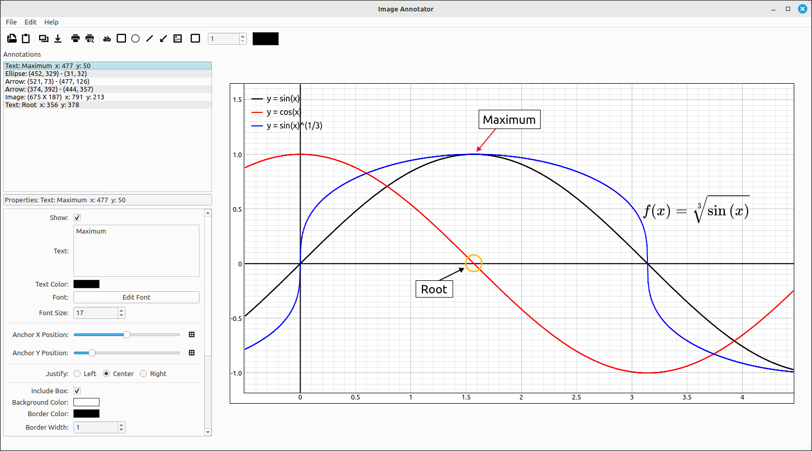

Image Annotator User’s Guide#
Introduction#
The Image Annotator is a program for incorporating simple annotations on an image. Once a base image is loaded into the program the user can then select to add simple annotations to the image. The program is useful for creating images to be incorporated into course notes, presentations, and other documents.
The program layout is fairly simple, a standard menu and toolbar at the top, the main image on the right, a list of annotations that the user inserted in the upper left, and the properties of the selected annotation in the lower left.

Image Annotator Layout#
Program Use#
Using the program is fairly straightforward.
Open or paste in a base image to annotate. This can be done with
File > Open Base ImageorFile > Paste Base Imagefrom the menu or the corresponding toolbar buttons.Insert the annotations you wish and set their attributes.
Save the annotated image to an image file or copy it to the system clipboard to insert it into a word processor.
Options#
In addition to inserting annotations, the menu and toolbar options are,
Open Project: This opens a project file which contains the base image and all the annotations that were created with the image.
Save Project As: This saves a project file which contains the base image and all the annotations that were created with the image.
New Blank Base Image: This will create a new blank image to use for the base image in the annotator. In most cases you will be annotating an already existing image, either from a file or from another program. So usually, you will be opening or pasting a base image into the program but that may be some cases where you want a blank canvas to work with.
Open Base Image: Opens an image file and loads it into the image area. This tool is primarily used with the graph that it opens with, but the tool has the ability to load and annotate external images.
Paste Base Image: Pastes an image from the clipboard into the image area.
Copy Image: Copies the current image to the system clipboard.
Save Image As: Saves the current image to a file. When invoked, a save as dialog box will appear asking the user for a filename. The default will save the image as a PNG file (probably the best format for graphs), if the user includes a known extension (such as .jpg or .bmp) the program will save the image in that format.
Print: This will send the image to the printer. When invoked, a dialog box will appear allowing the use to set the printing options.
Print Preview: This will open the image in a print preview dialog box that will allow the user to view the printed image as well as set other printing attributes and print the image.
Delete Annotation: Deletes the currently selected annotation.
Clear Annotation List: This option deletes all of the annotations.
Toggle Border: Toggles the graphing of a border around the entire image.
Border Width: Sets the width of the border if the border is set to display. This option is only available on the toolbar.
Border Color: Sets the color of the border if the border is set to display. This option is only available on the toolbar.